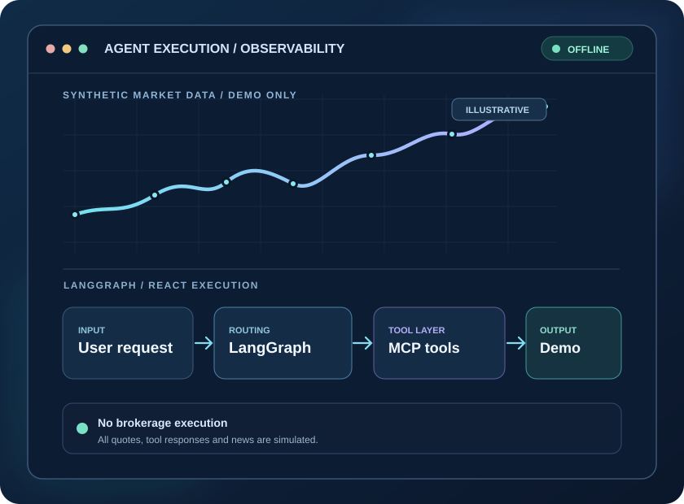
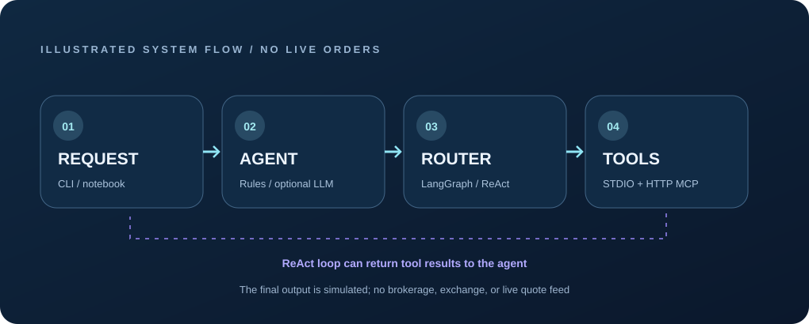

LangChain tools
Python tool wrappers for stock-price lookup and simulated buy/sell actions, including manual invocation and tool response messages.
OPEN-SOURCE AI AGENT ENGINEERING
Explore how LangGraph, LangChain and Model Context Protocol (MCP) coordinate tools through conditional routing, ReAct-style loops and local server connections—using fictional stock quotes and simulated trading actions.
Simulation only: No live market feed, exchange connection, investment recommendation or actual brokerage order.

GRAPHIC / NOT LIVE MARKET DATA01 / PROJECT CAPABILITIES
From a direct Python tool call to a graph-driven agent loop, the repository demonstrates the moving parts of agent-based applications using intentionally safe, deterministic examples.
Python tool wrappers for stock-price lookup and simulated buy/sell actions, including manual invocation and tool response messages.
StateGraph, MessagesState, conditional edges, ToolNode and routing patterns that model repeated tool-use decisions.
Illustrates the agent → tools → agent cycle, with separate graph examples for basic, manual, conditional and prebuilt execution.
Local STDIO stock tools and an optional Streamable HTTP news service demonstrate MCP tool discovery and invocation.
Fixed illustrative stock prices, deterministic trade responses, and synthetic news and sentiment. No live quote feeds or broker APIs.
Explicit --live mode integrates an OpenAI model for tool-call selection when you configure your own API key.
02 / SYSTEM ARCHITECTURE
The workflow separates the agent's routing logic from the tools it can call. The offline mode uses a rule-based stand-in for the model; live mode can use OpenAI instead.

TRANSPORT 01 / STDIO
The client launches a local subprocess hosting stock_price, buy_stock and sell_stock. Returned prices and trade messages are fictional.
TRANSPORT 02 / STREAMABLE HTTP
Optional server on 127.0.0.1:8000/mcp exposes market_news and market_sentiment with synthetic results. It should remain local.
When a ReAct graph is selected, a tool result can return to the agent node for the next decision. This diagram summarizes the example paths; specific command flags select different configurations.
03 / EXECUTION MODES
API access is optional. The project is designed to let developers explore graph mechanics without sending requests to a commercial model by default.
A deterministic rule-based object imitates the bind_tools, invoke and ainvoke interface. It is useful for learning tool-routing behavior without a paid API.
The --live option can call an OpenAI tool-capable model when properly configured. MCP examples can also connect to local tool servers.
OPENAI_API_KEY privately04 / TOOL CATALOG
The source includes three market-operation tools and two news/sentiment tools. Their examples prioritize control flow and integration boundaries over market realism.
| Tool | Source | Behavior |
|---|---|---|
| stock_price(name) | Stock / STDIO | Returns a predefined illustrative USD price, not a live market quote. |
| buy_stock(name, qty) | Stock / STDIO | Returns a simulated buy message; no brokerage order is created. |
| sell_stock(name, qty) | Stock / STDIO | Returns a simulated sell message; no brokerage order is created. |
| market_news(query) | News / HTTP | Returns a synthetic headline-style response; does not fetch articles. |
| market_sentiment(symbol) | News / HTTP | Returns fictional sentiment availability text, not a recommendation. |
On smaller screens, swipe the tool table sideways to read every column.
05 / RUN IT LOCALLY
Start with the offline self-test, then explore selected LangGraph and MCP examples. These commands assume Python is installed and your terminal is inside the cloned repository.
git clone https://github.com/su394611-del/Stock-market-trading-Application-using-MCP-langchain-langgraph.git
cd Stock-market-trading-Application-using-MCP-langchain-langgraph
py -3.12 -m venv .venv
.\.venv\Scripts\python.exe -m pip install -r requirements.txt.\.venv\Scripts\python.exe MCP_Langchain_Langraph_Tools.py --self-test
.\.venv\Scripts\python.exe MCP_Langchain_Langraph_Tools.py --list
.\.venv\Scripts\python.exe MCP_Langchain_Langraph_Tools.py --topic react --graph-mermaid# Terminal A: start the synthetic news HTTP server
.\.venv\Scripts\python.exe news_mcp_server.py
# Terminal B: client launches the STDIO stock server
.\.venv\Scripts\python.exe MCP_Langchain_Langraph_Tools.py --topic mcp-client --include-news06 / AGENT LAB · RECORDED RUNS
Every example from the README and wiki was executed: both MCP servers over STDIO and Streamable HTTP, all CLI topics, and eight LangGraph agents (including a supervisor multi-agent graph) across eight scenarios. Replay any run node by node, type your own prompt, or open the evaluation matrix and run graphs.
Simulation only: fixed example prices, synthetic news, offline rule-based model. Open the Agent Lab full screen ↗ · regenerate the data with python lab/run_agent_lab.py.
07 / SOURCE & DOCUMENTATION
Open the original files to inspect the tool implementations, graph routing, MCP servers, notebook walkthrough and dependency constraints.
All source files and commit history
Requirements, modes and commands
Tool routing and LangGraph examples
Prices and simulated trade tools
Synthetic news and sentiment tools
Step-by-step agent examples
LangChain, LangGraph and MCP versions
Additional project test entry point
GitHub Wiki navigation (availability may vary)
08 / CONNECTED AI PORTFOLIO
These local illustrations appear immediately. Choose a project to open its real website inside a Vue-powered iframe, or follow the direct link. Previews are optional because sites may block embedding.
The graphics above are original illustrations, not live screenshots or verified performance results. If a website blocks framing, use “Open separately.”
09 / QUESTIONS & LIMITATIONS
Technical FAQs about the code, its execution modes and the simulated nature of the stock-market examples.
No. Stock prices, transactions, news and sentiment are simulated. The code does not connect to a brokerage or execute financial trades.
No. The default offline mode uses deterministic rule-based tool selection. Optional live mode requires an external tool-capable model and your own credentials.
The stock MCP server uses a local STDIO subprocess. The optional news server uses Streamable HTTP on localhost. Both return demonstration data.
The repository documents CPU-friendly examples and does not require a CUDA GPU for the offline demonstrations.
No. The iframe is created only when you choose a preview. Each preview also has a direct link, since some websites may restrict iframe embedding.
The GitHub repository includes the CLI Python script, notebook, MCP server examples, requirements, tests, and README with commands.
Get in touch
Ask about the code, a collaboration or an AI engineering role. Messages go straight to my inbox, and I'll reply by email.
More work: AI engineering portfolio ↗
Form not loading? Open the contact page ↗